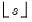
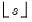

|
|
|
is the lag operator.
• n-th order difference function for natural logarithm of series with an s-th seasonal difference.is equivalent to d(log(y),2), the 2nd-order difference of the log of the series y.
 is the lag operator.
is the lag operator. will be used.
will be used. is the lag operator.
is the lag operator.  and  will be used.
and  will be used.